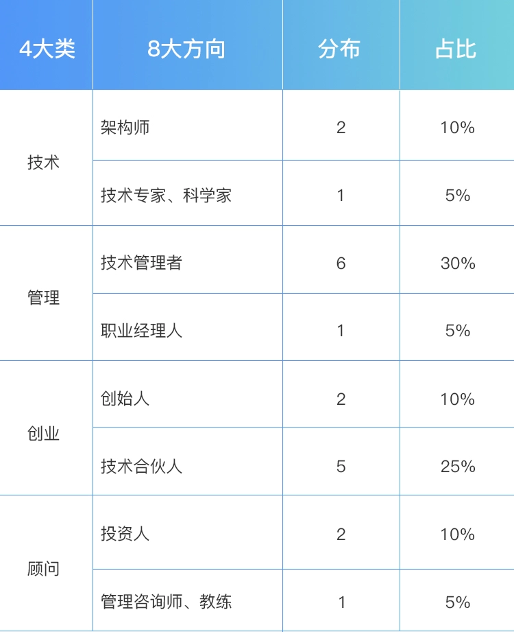
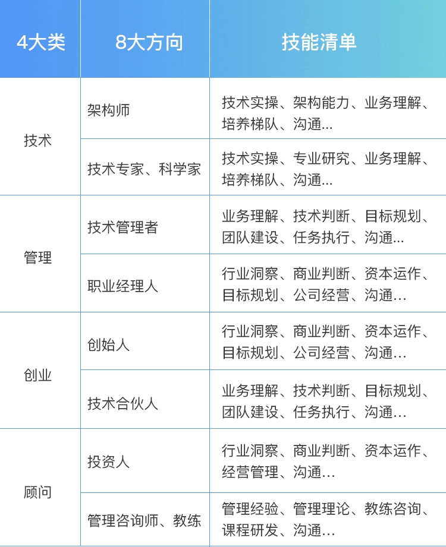

- 00 开篇词 你为什么需要学管理？.md.html
- 01 多年前的那些工程师都去哪了？.md.html
- 02 我要不要做管理呢？内心好纠结！.md.html
- 03 哪些人比较容易走上管理岗位？.md.html
- 04 我要不要转回去做技术呢？.md.html
- 05 作为技术管理者，我如何保持技术判断力？.md.html
- 06 我这样的风格能做管理吗？.md.html
- 07 我能做好管理吗，大家服我吗？.md.html
- 08 管理到底都做哪些事儿？.md.html
- 09 从工程师到管理者，角色都发生了哪些变化？.md.html
- 10 新经理常踩的坑儿有哪些？.md.html
- 11 我刚开始带团队，从哪里着手呢？.md.html
- 12 如何界定我团队是干什么的呢？.md.html
- 13 如何为团队设定合理的目标呢？.md.html
- 14 如何来规划团队的组织结构呢？.md.html
- 15 我都要申请哪些资源呢？.md.html
- 16 团队建设该从哪里入手？.md.html
- 17 如何提升员工的个人能力？.md.html
- 18 如何提升员工的工作意愿和积极性？.md.html
- 19 如何兼顾团队分工的稳定性和灵活性？.md.html
- 20 有什么方法可以有效提升团队凝聚力吗？.md.html
- 21 如何物色和培养核心人才？.md.html
- 22 如何建设团队文化，营造团队氛围？.md.html
- 23 如何和低绩效员工谈绩效？.md.html
- 24 如何让团建活动不再“收效甚微”？.md.html
- 25 多任务并行该如何应对？.md.html
- 26 如何确保项目的有效执行？.md.html
- 27 如何让流程机制得到有效的执行？.md.html
- 28 管理沟通那些事儿.md.html
- 29 沟通经常鸡同鸭讲，说不到一块怎么办？.md.html
- 30 如何掌控自己的情绪，以及如何管理情绪化的员工？.md.html
- 31 我各方面做得都很好，就是做不好向上沟通.md.html
- 32 横向沟通和非职权影响力.md.html
- 33 向下沟通的常见实例解析.md.html
- 34 管理沟通上有哪些常见的坑儿呢？.md.html
- 35 从空降谈管理方法论的积累.md.html
- 36 走出自己的管理之路.md.html
- 捐赠
01 多年前的那些工程师都去哪了？
也许是现在，也许是未来，总有那么一天，你会操心自己的职业发展。当你抬起头来，展望自己的职业道路的时候，也许这篇文章可以给你一些指引。
实际上，我一直希望能够帮技术人整理一个职业发展路径的图谱，让技术人在碰到职业选择困惑的时候，可以看看别人走过的路。而上周的“老知道人”聚会，刚好给了我一个很好的机会，因为这是一个跨越了 10 年的比较完整的“样本集”。
“老知道人”，是对百度知道早期团队成员的一个称谓，虽然大部分都已不在知道团队，但这并不影响大家对于这个产品以及同事的深厚感情。
百度知道于 2005 年 11 月正式上线。我正是怀着对这个产品的无比喜爱，以及对百度“让人们平等便捷地获取信息，找到所求”使命的无比认同，于 2005 年 12 月加入知道团队，成为一名后端工程师，因此我对 2005 年～2008 年百度知道的工程师们都非常熟悉。
刚好就这次聚会，我整理了一下当年这批工程师的职业发展状况，如今大体分布在四个大类的八个方向。
这四个大类分别是技术类、管理类、创业类和顾问类，接下来我逐个来详细说明。
一、技术类
技术类主要包含两个大方向。
一个方向侧重于“广”，着眼技术的整体性、架构性和业务解决方案，我们姑且称为“架构师”或“首席架构师”。 他们往往是一个产品或服务的技术方案的“总设计师”，他们常见的作品包括社区类服务架构、云服务架构、搜索架构、电商服务架构、O2O 服务架构、数据平台架构等等，每一个产品背后都有一位或几位技术架构师。
另外一个方向侧重于“专”，着眼于某个专项技术的深度、专业度和精细度，我们姑且称为“某领域技术专家”或“科学家”，比如图像技术、语音技术、机器学习、推荐算法等等。他们往往是一个专业领域里的“武林高手”，他们的作品被广泛应用在每一个专业领域。
二、管理类
管理类也有两个不同的方向，即技术管理者和职业经理人。你可以认为职业经理人是技术管理者的更成熟阶段，但我更倾向于认为这是两个不同的选择。
技术管理者，这个方向很自然，就是从工程师到技术团队的一线经理，再慢慢做到部门经理等二线经理，然后是某个大技术体系或整个技术部的技术副总裁，如果还包括产品、设计等所有“产品交付”类团队，就成为了一个常规意义上的 CTO，但总体上，都是技术管理者。
另外一个方向是职业经理人。之所以叫职业经理人，是他不限于管理技术类团队，往往负责的是一个完整的业务，很像是这个业务的 CEO，有些公司也会叫 GM（general manager）。这个角色并不限定在具体一个业务，还可以根据公司需要去负责一个新业务，迁移性比较强，比较接近我们常说的“职业经理人”。这样的管理者会关心一个业务经营的方方面面，但本质还是公司高管，在公司整体框架下工作。
三、创业类
创业类对于技术人来说，也有两个方向。
一个方向是作为创始人牵头创业，做领头羊。创业成功后就成为我们所说的“企业家”，像李彦宏、马化腾、周鸿祎等，这都是技术人牵头创业的典范。当前人工智能、大数据、区块链、云服务这些技术方向的大热，也催生出很多技术出身的 CEO，在自己的技术领域里开疆拓土，挥斥方遒，神策数据的 CEO 桑文锋就是我们“老知道人”在这个方向上的佼佼者。
另一个方向是作为技术合伙人或技术高管全盘负责公司的技术，以技术管理为公司“安邦定国”。几乎每一个成功的创业公司，都有这么一个强有力的角色，比如互联网第二梯队的 TMD 中， 头条（T）的杨震原、美团（M）的穆荣均、滴滴（D）的张博，都是这个方向上的优秀代表。
而且可以小小自豪一下的是，他们都是曾经的老百度人，其中荣均还是百度知道的元老之一。显然，这个方向上的成功案例不仅于此，大部分独角兽的公司背后都有一个强有力的技术高管。
你可能会问，这个技术合伙人的方向，和技术管理者的方向有什么区别吗？看上去都是“技术高管”。但区别其实还是很大的，主要在于：你是从公司早期就共同创业做到高管的，还是你只是在一家比较成熟的公司做高管的？这是两条很不同的路。
其中，前者的核心是共同创业，这里我列举的都是创业比较成功的案例，是为了方便你理解和认知，而现实中大部分的创业都是尚未成功的，所以大部分技术合伙人面临的是创业团队的压力和不确定性，他们在大部分时间内都不是技术高管，而是共同创业者；但后者，较成熟公司的技术高管则不同，他们大部分时间都是在做技术管理，工作方式、方法和创业公司差别是很大的，所以这其实是非常不同的两个职业方向。
你可能还会问，为什么要把创业者和技术合伙人区分为两个方向呢？他们不都怀着创业的心态吗？我想说，我分开来讲的原因是这两个角色对人的要求的差异是相当大的，因为他们的职责差异很大，所以他们的“技能清单”差异也很大，因此我将其分为两个方向。
四、顾问类
顾问类的两个方向离得有点远。
一个方向是投资顾问，也就是做投资人，有做投前的，也有做投后的，基于对一个创业团队和项目的完整判断，从外围以资本运作和投后服务来支持创业公司发展。他们在做投资人之前，往往都有着相当丰富的企业经营管理经验、宽广的视野和敏锐的洞察力。比如百度风投的齐玉杰、清流资本的王梦秋和陈韫敏，之前都是百度的高管，都曾经直接或间接管理过百度知道团队，他们也都曾经是百度的工程师，典型的技术人。
另外一个方向是管理顾问，也就是提供培训、咨询服务，偏人力发展和团队建设。这个方向是通过支持管理者和 HR 来支持公司的发展，往往以多年的管理经验、管理理论、教练技术和培训经验为依托。目前，这个方向的人是最少的，好像只有我在做。而且，1 年前，我还是创业公司的技术高管，而 5 年前，我是百度的一名部门经理。
上面，就是 10 年前的“老知道人”，在 10 年后的职业发展情况。你可能会问，除了上述 8 个方向，还有没有其他的发展路径呢？答案是有的，比如技术网红、技术媒体人，以及各种断崖式转行：专职理财、继承家业、全职奶爸奶妈、周游世界等等，这些情况太偶然，很难借鉴，所以不在我们的探讨范围内。
你是不是会好奇，这 20 个人的分布情况会是什么样的呢？下面，我们来看看各个方向的占比：

“老知道人”发展方向分布
综合这些数据我们不难发现如下三个特点：
整体分布情况比较分散，大家 10 年后都有了自己的选择。
技术管理者和创业公司的技术合伙人相对集中，两个方向加起来超过一半。
10 年后仍坚持做技术的比例比较低，在 20% 左右。
当然，这个“样本集”用于说明整个互联网领域技术人的发展情况，显然是不能完全代表的。但是这也可以在一定程度上给你一些感性认知，供你参考。
你可能会问，不同的发展方向，需要做哪些方面的准备和积累呢？对此，我先展示一下各个发展方向上的“技能清单”，这个技能清单都是“通常来说”需要具备的，并不能代表所有情况：

八大方向技能清单
上面这些“技能清单”，用的都是很大的词，听起来可能有些笼统，我理一下大体的逻辑。
开始，你作为工程师，需要有很好的技术实操能力，这是作为工程师的职业素质。慢慢地，随着你能做的事情越来越多、越来越大，你会提升整体架构能力，成为一名架构师。而如果你对某个专业领域的技术越来越专精，你会成为一名技术专家或科学家。
当然，你也可以不断拓展自己项目管理能力和带团队的能力，这样你会成为越来越高级的技术管理者，也可以去创业公司做技术合伙人。当你越来越关注行业发展、商业逻辑、公司经营，就慢慢拥有了职业经理人和公司创始人的视角；当越来越关注资本运作和资本产生的价值，就会从投资人的角度去看待各行各业和整个社会。
这里我是按照视角的迁移和能力的扩展来阐述整个过程的，但是作为每个人的职业发展，却并不需要完全沿着这个过程，也并没有越后者越高级的说法，最终你会停留在自己喜欢和认同的角色上，那个就是最好的。
但是，无论你走哪条路上，你都会发现有些能力是共通的，比如规划、带人、沟通、执行等管理能力覆盖了全部 8 个方向。
因此，这里你还需要区分“技术管理能力”和“技术管理岗位”这两个概念。你可能出于兴趣、机遇等各种原因不会去选择做“技术管理岗位”，但是，“管理”作为一项综合能力，是你未来的职业发展所不可回避的，至少你都需要和管理者合作。只不过因为你的角色不同，需要掌握的程度不同。
总之，对于技术人来说，无论你是否做技术管理岗，你所有的职业发展，都会围绕着技术和管理这两条腿在走路，一条腿是走不远的。
所以，你现在知道多年前的那些工程师，是如何迈着两条腿走向远方的吗？
© 2019 - 2023 Liangliang Lee. Powered by gin and hexo-theme-book.